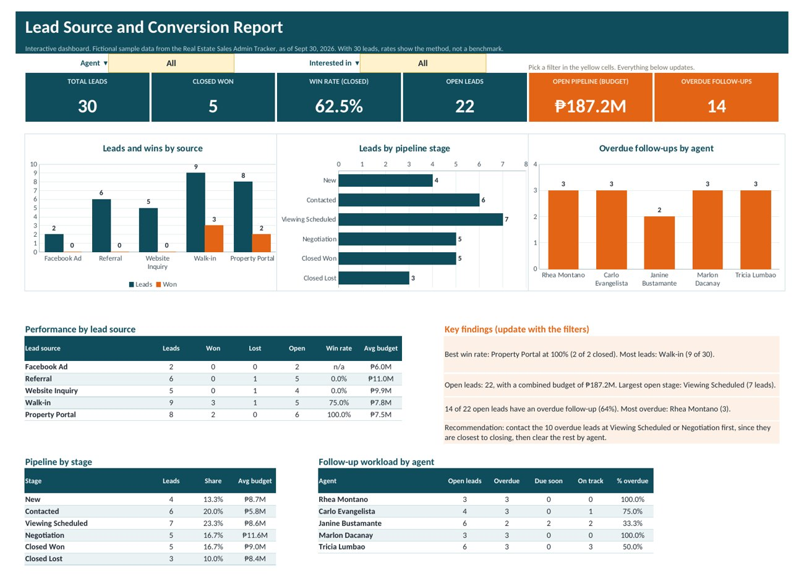

Project metrics
The dashboard

Default view with both filters set to All.
What I did
- Built an interactive dashboard in Excel with two dropdown filters: Agent and Interested in
- Used COUNTIFS, SUMIFS, and AVERAGEIFS formulas so every tile, table, and chart responds to the filters
- Added three native Excel charts: leads and wins by source, leads by pipeline stage, and overdue follow-ups by agent
- Wrote the key findings as formulas, so the written insights update when the filters change
- Included a recommendation that points the team to the overdue leads closest to closing
Try the filters
Agent: All
30leads
5won
14overdue follow-ups
Agent: Rhea Montano
4leads
1won
3overdue follow-ups
Picking an agent updates every tile, table, chart, and finding on the sheet.